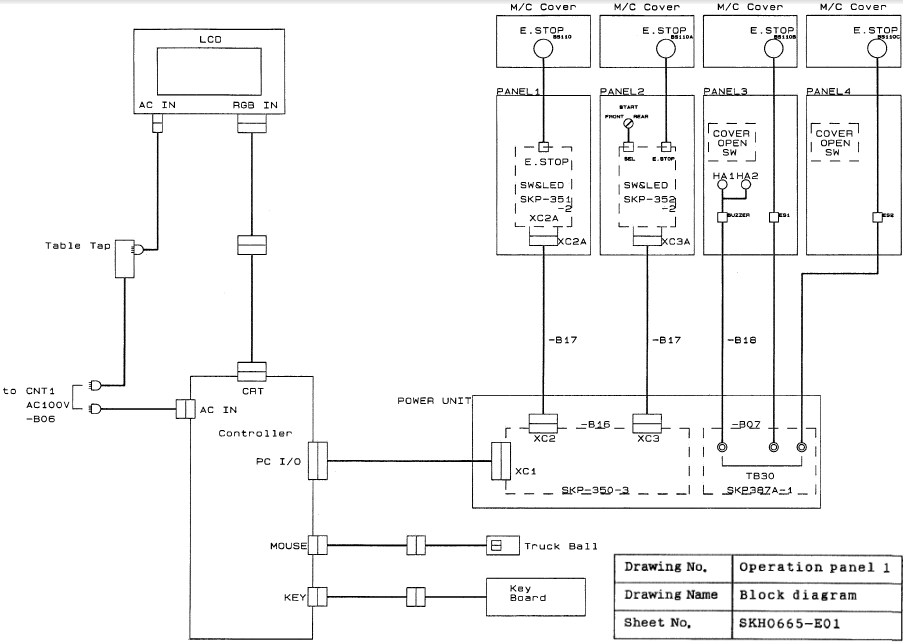

Service History
Subject: NS6040 Door open error always ON error message
Handler Model: NS-6040(S/N: 18288)
Controller: SRC520
Date: 11 Aug 2008
Symptom
NS6040 Door open error always ON error message.
Action
-Manual installation of Win95.
-Installation of SPEL95 version 2.30a and version up to 2.53i
-Installation of MMI 1.3g and version up to 2.0c1
-Restoration of system data from other handler as there's no original backups.
-Check PC I/O card and remote I/O card.
-Check door switches functionality using multimeter.
Door open error still persist.
-Re-sit all door switches connectors(XC911, XC912,XC914,XC914B)
-MCORG robot 1 to 6, MCAL robot 1 to 6.
-Dry run handler.
-SRC520 controller feels hot. Found controller cooling fan faulty.

Cause
It could be connector for door switch was loose, re-sit all door switches connectors(XC911, XC912,XC914,XC914B).